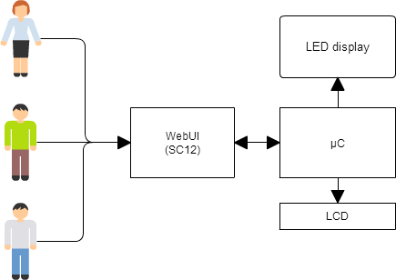
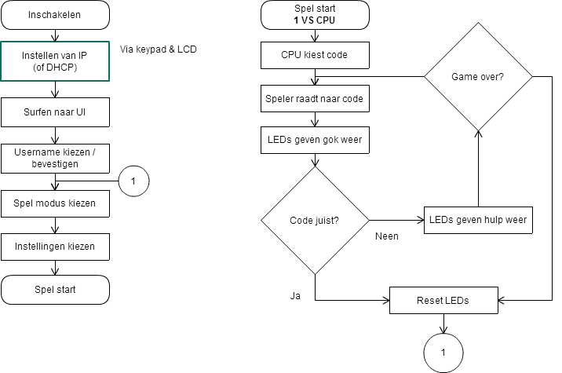

Image 1
Hallo!
Ik ben Dries Kennes, student ICT-Elektronika Fase 1 aan Thomas More Mechelen op Campus De Nayer.
Mijn voornaamste intresses zijn elektronika en alles wat enigszins te programmeren valt. Dit is ook hoe ik in deze studierichting ben terecht gekomen.
In mijn (schaarse) vrije tijd ben ik een enthousiaste Java programmeur die vooral build-to-order Minecraft mods maakt.
Voor mijn eerste project heb ik een MasterMind-clone gemaakt. De besturing gebeurt met je smartphone, en het spel kan gevolgd worden op een LED display.
Ps: Door op de achterliggende elementen te klikken kan u ze naar voor brengen.
Hardware
De hardware van dit project is gebaseerd op de RIOT ontwikkelomgeving gemaakt door Mr. Roggemans en Mr. Pauwels.
De SC12 zorgt voor de webinterface, de µC (een AVR ATMega128) stuurt de LCD, keypad en LEDs aan.
Klik hier voor meer details.
Software
Dit blokschema is een voorstelling van de software in de SC12.
De software is ook voorzien op een '1-tegen-allen' modus.
Voor een schema van de software in de AVR en meer details kan u hier klikken